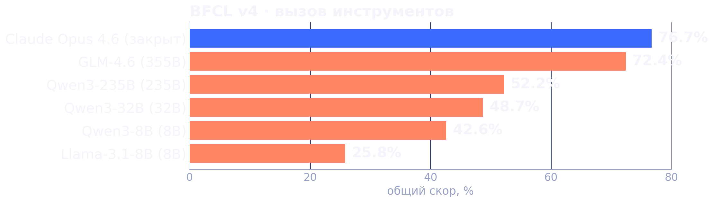
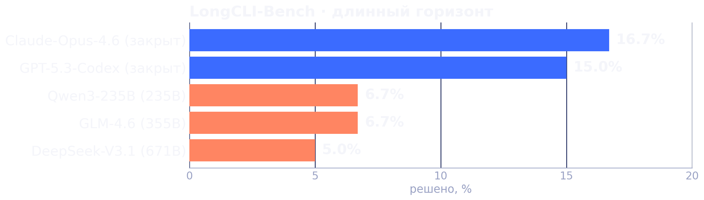
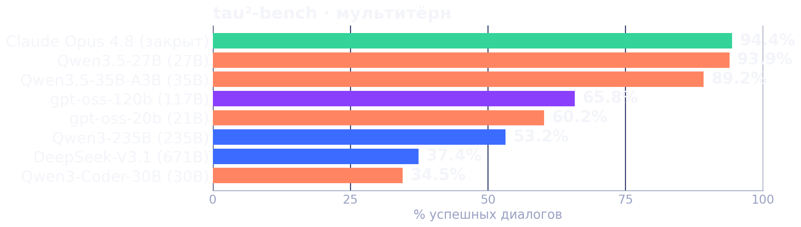
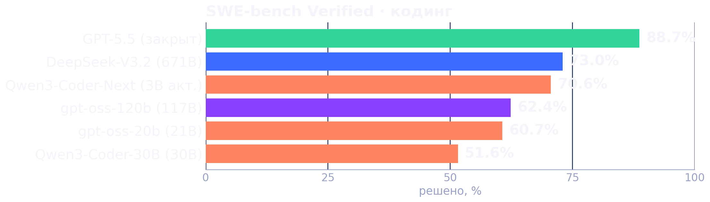

On-premise модели для разработки с агентами в закрытом контуре, и что делать, когда модель не тянет
Дёшево, локально и сегодня. В чём подвох?
On-prem жёстко ограничивает вас в выборе LLM. Какое железо, такая и модель. Это ваш потолок инференса.
Потолок пробивают железом под большую модель, а разрыв с SOTA закрывают прокачкой harness.
Хватает на короткие задачи - скрипты на bash и Python, запуск тестов. На многих шагах уходит в repetition loop.
Иногда справляется, но на длинном контексте нестабильна, закладываться не стал бы.
С этого порога у меня начинается стабильный кодовый агент.
В моей практике модели ниже 100B - Qwen3.5-27B и 35B, GPT-OSS-20B, Qwen3-Coder-30B - тянут короткие задачи, но в длинных агентных циклах теряют контекст и уходят в повторяющиеся вызовы. Квантизация от 4 бит и ниже ещё сильнее снижает качество на больших окнах.
Отдельные команды работают и на меньших моделях, но стабильного результата в длинных циклах я не получил. Если коротко, ниже 100B жизни нет - это мой опыт, а не универсальный закон.


закрытые облачные open-weight, self-host
На вызове инструментов открытые модели ниже фронтира, а на длинном горизонте обваливаются даже гиганты. Маленькие тут не участники.


менее 40B 40-200B более 200B закрытый фронтир
На некоторых бенчах 27B обходит 235B и 671B, а на SWE 3B активных идут рядом с фронтиром. Разнобой результатов намекает на трейн на бенчах.
"У нас гигантская кодовая база, давайте обучим модель, она посмотрит наш код и начнёт лучше работать."
Это вторая идея - обучить своё, вполне нормальный вариант, однако, есть нюансы.
Когда говорят "давай дообучим", почти всегда имеют в виду только SFT поверх готовой модели.
Модель заучивает форму кода: стиль, имена, структуру. Внутри домена датасета тесты показывают хорошие результаты, однако, модель чаще галлюцинирует за его пределами.
Смыслы и факты не закладываются, модель так же выдумывает несуществующие функции.
Замер в работе сделан на тестовых задачах, подтверждено эмпирически на моих проектах.
Дампа репозитория недостаточно для RL.
Нужны ещё размеченные примеры диалогов с агентом, как для SFT так и для RL.
Такого датасета обычно нет, а собрать и поддерживать его дороже, чем купить GPU.
SFT - десятки и сотни тысяч размеченных траекторий диалогов с агентом. RL - ещё и среда с проверяемой наградой плюс тысячи промптов и роллаутов.
Full SFT: веса ~70 ГБ, а с оптимизатором AdamW ~560 ГБ - это узел 8×H100. RL сверху кратно дороже, роллауты медленные. Один прогон - дни, а прогонов много.
Даже если решить вопрос с датасетом, остаётся проблема нехватки железа: либо много железа и очень много времени, либо очень много железа и много времени.
Порядок величины для полного файнтюна: ~16 байт на параметр, обучение больших моделей длится дни или даже недели.
Дообучили под свой стек - общие способности просели. Модель теряет качество по осям, которых в вашем бенче нет.
Без eval легко перепутать "стала чаще молчать или соглашаться" со "стала умнее".
Консервативный QLoRA, 4-bit, LoRA rank 16, 150k агентных и ризонинг-сэмплов. Хватило одной RTX 4090 48Гб, обучение заняло десятки часов.
Уловила шаблон рассуждения, но забыла русский, не тянет длинный контекст и срывается в repetition loop.
Обучить маленькую LLM дешевле по железу, но отдача слабая.
И например Kodify Nano на 1.5B от MTS AI не обходит модели общего назначения покрупнее и годится максимум для автодополнения.
Маленькая не тянет, обучение дорого и даёт слабые результаты, следовательно практичнее будет вложиться в железо и поднять большую модель общего назначения.
Используя движок vLLM или SGLang поднимаем Qwen3.5 на 397B или Kimi K2.7 на 1T.
И это потребует меньше железа, чем ушло бы на полноценное обучение с SFT и RL меньшей модели.
Этот разрыв никуда не денется, его закрываем не весами, а harness.
Не тащите данные к модели, лучше дайте модели дотянуться к ним самой.
Поиск по файлам, чтение, консольные тулы и скрипты. Модель принимает решения и сама находит нужное.
Объясняете, что и как делать: AGENTS.md, документация, спецификации, рулесы, тесты.
Модель сама решает, что открыть и что положить в контекст. Как правило уже встроен в большинство харнесов.
Это и есть harness, так работают Cursor, Claude Code, Codex, мой Coddy и другие агенты.
Модель лучше видит начало и конец окна, но из-за механизмов разреженного внимания проседает на середине.
Маленькие шаги, спеки и тесты перед кодом, свежий контекст, оркестрация, сэмплинг из карточки.
Каждый слой компенсирует разрыв между вашей моделью и SOTA.
AGENTS.md или .coddy/rules/ там описываем архитектуру, как собирать, как тестировать, что можно трогать, а что нельзя.
Разработчики договариваются работать по BDD или хотя бы TDD, благодаря этому у модели всегда будут рельсы и план, что и как делать.
Сначала спецификация и тесты, потом реализация, это позволяет сфокусировать внимание модели (см. Lost in the Middle).
Правила - это память проекта, которую агент читает на каждом шаге, без них даже большая модель работает вполсилы.
Тесты - это тоже память проекта, они гарантируют, что при добавлении новых фичей старые фичи не были сломаны в процессе.
Помимо готовых можно всегда написать свои.
Дают агенту доступ к защищённым удалённым системам по единому протоколу.
Не больше 5-7 серверов: каждый MCP должен отбивать свои токены.
Если задачу надо решать в рантайме, агенту нужны обычные консольные инструменты.
Под веса, под контекст и под параллельные потоки. Впритык - одновременно работает пара человек, не больше.
Электричество плюс амортизация железа в пересчёте на миллион токенов. Посчитаем это дальше.
On-prem даёт изоляцию данных и предсказуемость, но за железо и его простой платите вы.

P - мощность узла, кВт · T - цена электричества, ₽/кВт·ч · S - цена железа, ₽ · H - срок службы, ч · R - скорость генерации, ток/с
Предположим, закупили узел из восьми H100 и хотим поднять на нём Kimi K2.7.
Из них электричество ~10 ₽, остальное - амортизация, а без постоянной загрузки ещё дороже.
При загрузке узла ≈ 144 ₽ за 1M выходных. Данные не покидают контур, но платите и за простой.
Выход $4.00 (≈ 400 ₽), вход $0.95 (≈ 95 ₽), кэш-хит $0.19 (≈ 19 ₽) за 1M. Платите по факту, но данные уходят провайдеру.
Фикс в месяц - Codex Plus $20 (≈ 2000 ₽) или Kodacode Pro 1 590 ₽. Предсказуемо, но лимиты и внешняя модель.
On-prem выигрывает не ценой токена, а изоляцией данных и предсказуемостью. По деньгам он обходит облако только при высокой загрузке узла, а агентные циклы input-heavy, где облачный кэш-хит почти обнуляет вход. Так что и "on-prem дешевле" - не универсальный закон.
Рубли ориентировочно по курсу ~100 ₽/$, цены API и подписок на июнь 2026.
Это выводы из моей практики, у ваших задач вводные могут отличаться.
В канале - разборы про агентов, harness и self-host без маркетинга.